Туториал по использованию
плагина
1.Скачайте плагин с сайта.
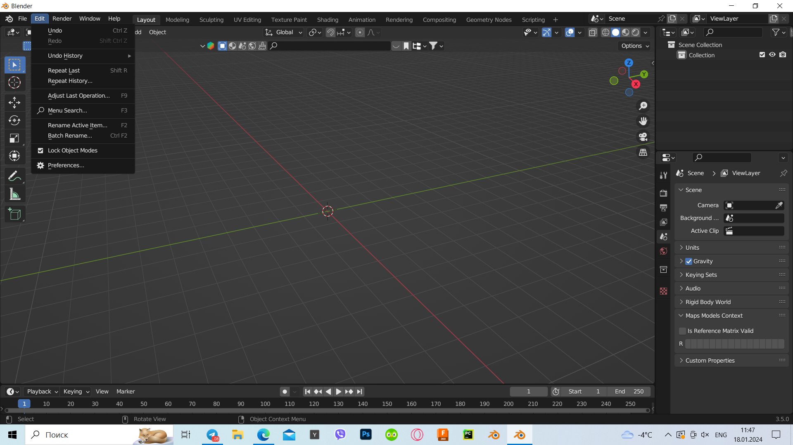2.Зайдите в Blender. Нажмите на вкладку edit и выберите меню preferences.
3. Зайдите во вкладку add-on и нажмите кнопку install.
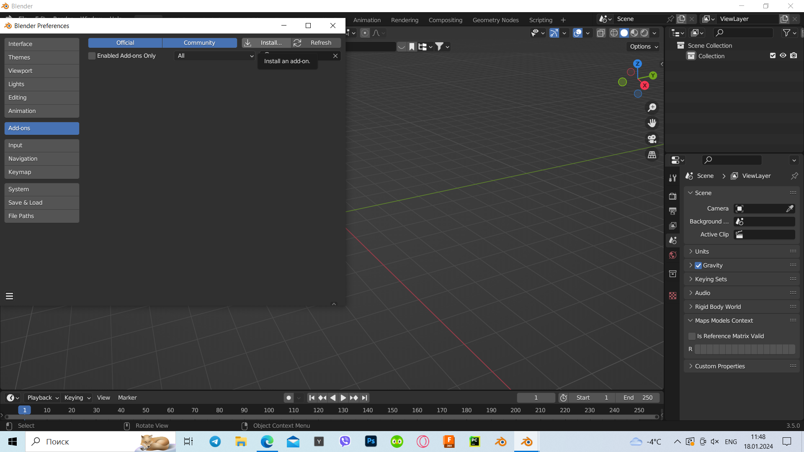4.После выберите архив ZaSeg.zip и установите его в выскачевшем окне поставьте галочку, чтобы плагин запустился.
5. Сверху под вкладкой modeling появиться иконка ZaSeg.
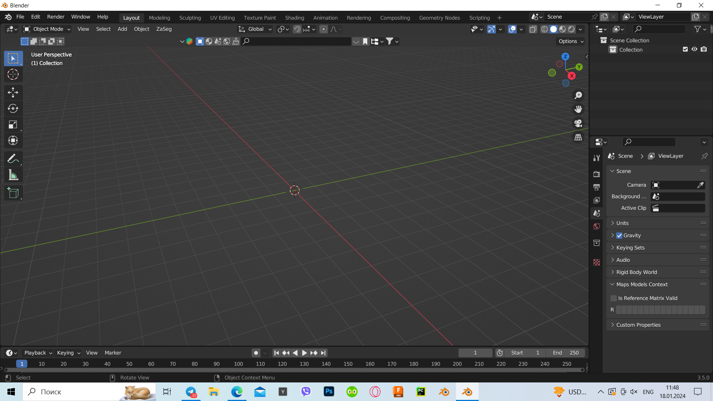6. Нажмите на эту иконку и выберите web geodata.
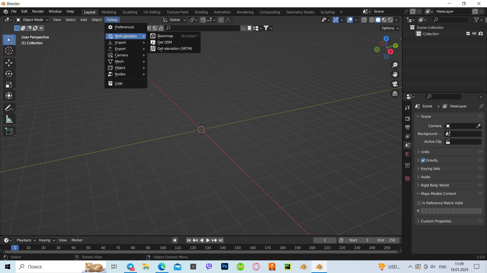7. Выберите Basemap и нажмите OK.
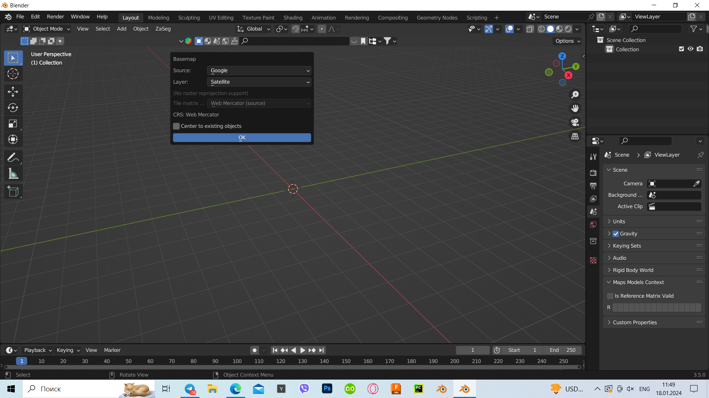8. Появиться карта как на фото, чтобы найти определенное место нажмите на клаиатуре кнопку G.
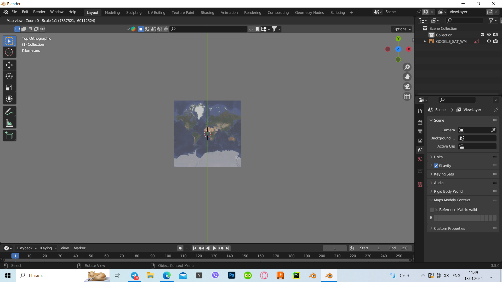9.Введите нужную вам точку на карте (можно написать название города на русской, английском,либо просто указать координаты места) и выберите уровень приближения.
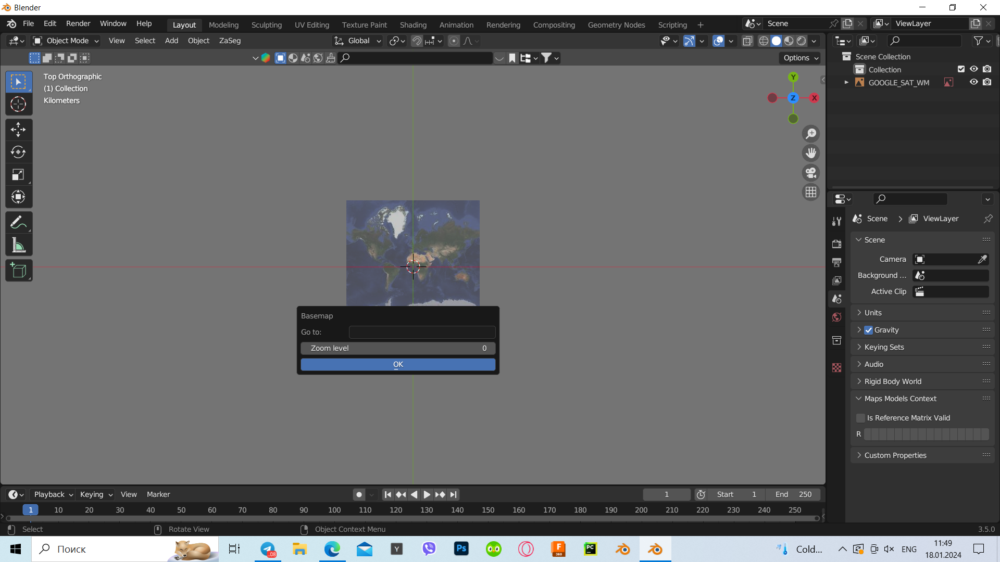10.Когда вы выбрали точку нажмите E чтобы подтвердить точку.
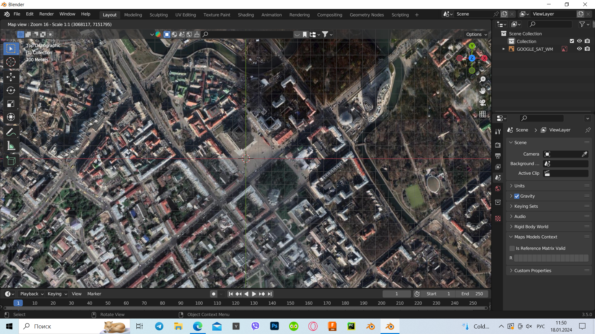11.Далее снова зайдите во вкладку ZaSeg и выберите getelevation.
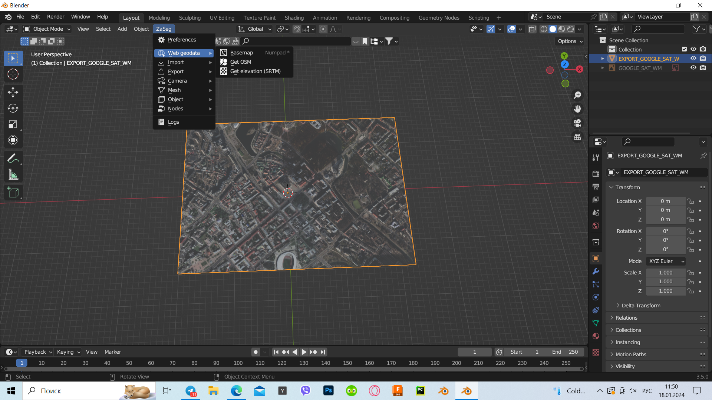12.Во вкладке Server выберите Marine-geo.org GMRT.
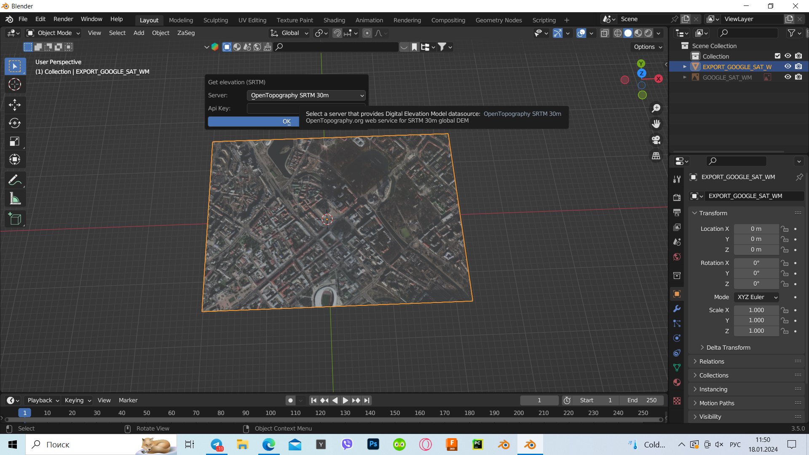13.Потом зайдите во вкладку ZaSeg и выберите get OSM.
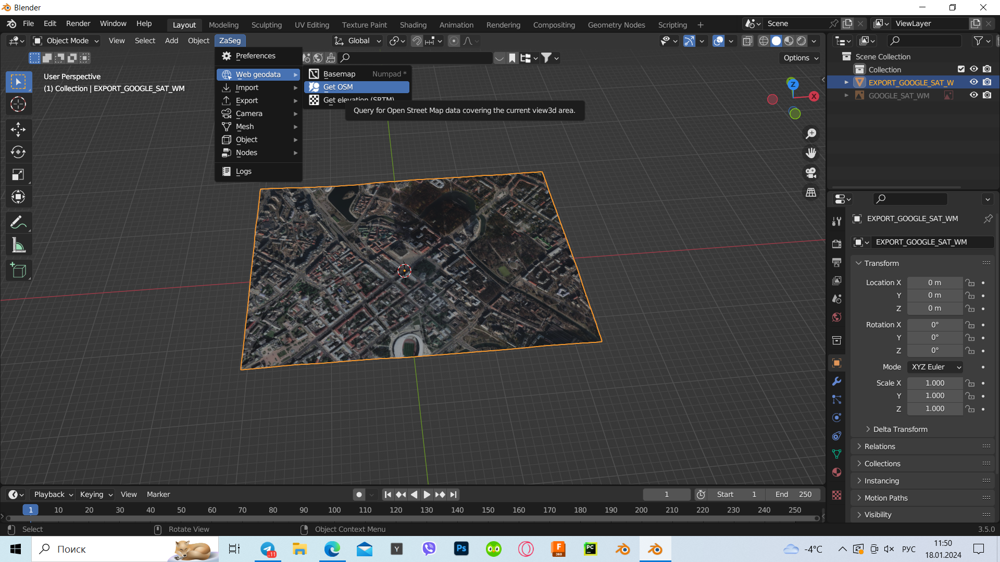14.Выберите что вы хотите добавить через шифт если хотите разделить все обьекты поставьте галочку у меню seperate object
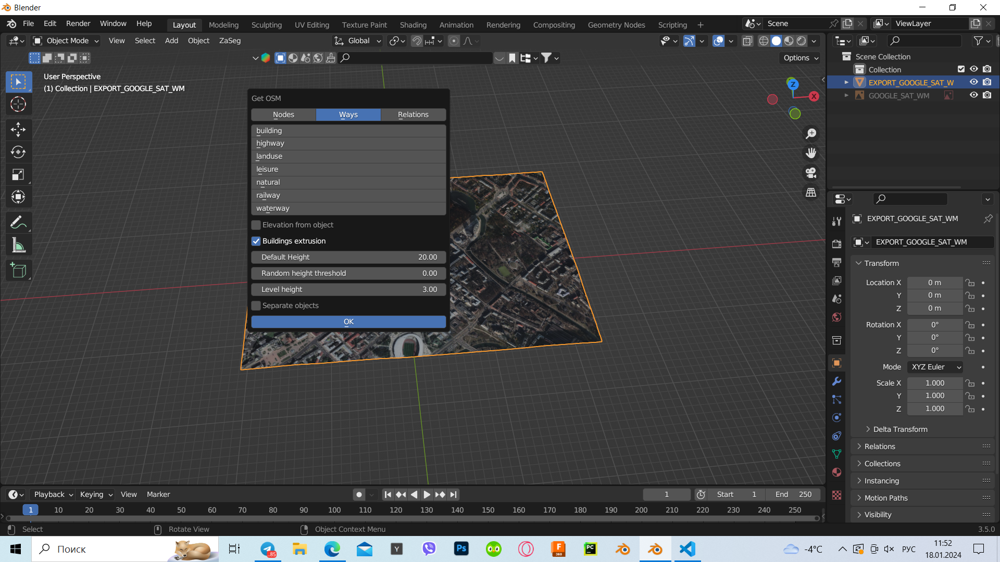15.После загрузки появится 3D модель
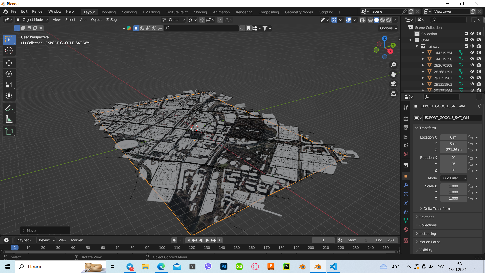